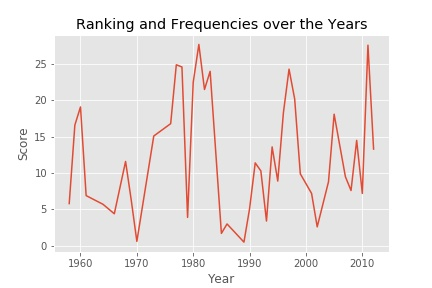
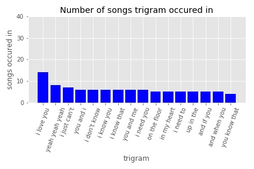
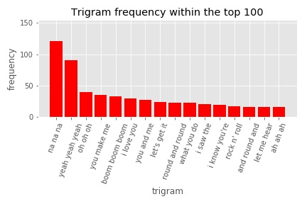
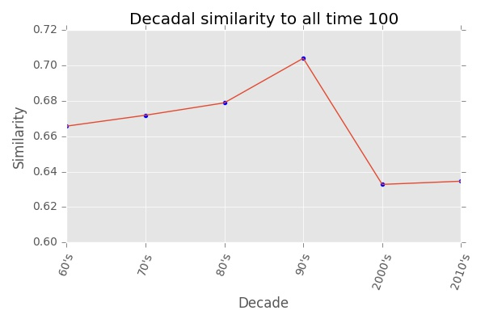
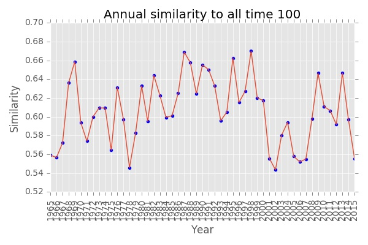
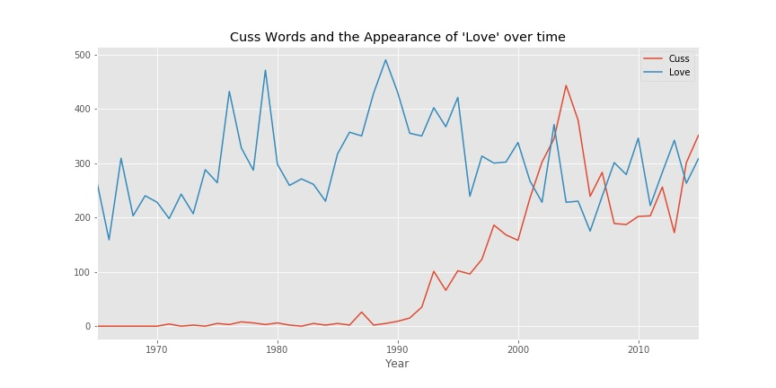

Our Data
To perform our analysis, we first scraped the list of 100 songs from Billboard for the song name, year, and artist.
Then we turn to songlyrics to retrieve the lyrics for each song. Out of the 100 songs, we were unable to retrieve lyrics for 4 songs due to collaboration between the artists, the song title not matching, or the title from Billboard was a combination of two songs. For these special cases, we scrape individual sites.
Besides getting just the lyrics, we also used Spotify’s API to extract audio features of the songs. For a detail description of the features, clicked the spotify link above.
Beside examining list of top 100 songs of all times, we also followed the course instructor’s suggestions and looked at Billboard’s year-end top 100 songs between the years 1965 and 2015 to see if there is any further insight. Due to time constraint, we did not webscraped the data for this part and instead used a csv file someone else created with this information.


Analysis Part I Top 100 of All Time
Distribution of the Songs Across Time
To see if there was a “golden period” of music, where lots of songs got released that eventually ended up on this top 100 list, we examned how many songs end up in the top 100 list for each year. We can see many songs landing between the 70s and early 80s, follow by a period of inacitivty and a slight resurgeance prior to the 20s. Entering into the 20s is another period of low and spikes again around 2010.
Repeated Artists

Getting a frequency count on the number of artists that appear on the list more than once, we got 13 artists total. (We double count artists that share collaborations)
A Scoring System Approach

As a different approach to answering ‘when were the good songs released’, we generated a scoring system. To contrast between the barplot of song by year and the score plot, we can see that the 80’s period has been diminished some bit, and appears to be tied with 2011, which is interesting, since 2011 has 4 hit songs, and 1980-1983 had around 5-6 hits each. (Note: higher index -> better performance on top 100 chart).

Spotify Audio Features
Some interesting patterns that we noted in the audio features is that for valence and energy, there is a dip between the 1985 and 1990. This may indicate a period of sadder songs hitting the charts.
N-Gram
Ngrams are contiguous sequences of n items. For our analysis we are looking at the bigrams and trigrams within the lyrics of the top 100 songs to see what are the most common 2-word and 3-word phrases. Since a single song may contain a lot of repetition of certain phrases, we only looked into bigrams and trigrams that appeared in more than one song.
 
In general, we found that most of the bigrams were not meaningful, so we will focus more on the trigrams. The trigram that appeared in the most songs was “I love you”, which was found in 14 of the 100 songs.
 
The most common trigram within the corpus of the 100 songs’ lyrics was “na na na” and some other nonsensical sequences.
Lexical Density
Lexical Density = number of lexical words (or content words) divided by the total number of words.

Sentiment Analysis
Sentiment Analysis was conducted using the Python package TextBlob via the Pattern Analyzer. The package returns a polarity and subjectivity measure.
- Polarity: positive or negative connotation, value between [-1,1]
From the plot of polarity against time, we can see that a majority of the songs are positive. However, there may be inaccuracy in the classification, because as we can see the most negative song is ‘Call Me Maybe’ by Carly Rae Jepsen, which we know for sure is not a negative song. However, since the lyrics repeats ‘so bad’ and ‘crazy’ many times, it has a negative score.
- Subjectivity: subjective or objective, value between [0,1]
From the plot of subjectivity against time, we see that all of the songs are moderately subjective, siginifying the meaning of the words depend on the person.
Due to some inaccuracy in the polarity measure, we decided to create a new sentiment score using the combination of audio valence and polarity. We compute this score by scaling polarity to be between 0 and 1, then add this value to valence and divide by 2 to keep everything within the [0,1] range. Thus, scores closer to 1 will still be interpreted as positive and closer to 0 interpreted as negative.
Examining the plot with the adjusted score, we see that ‘Call Me Maybe’ is now ranked higher in positivity than previously. The general shape for the scatter plot follows the one for valence.
Word Clouds By Year


Analysis Part II Top 100 Year-End (1965-2015)
Similarity Between Top 100 of All Time and Year-End Top 100
Using a collection of top 100 songs of the year for years between 1965 - 2015, we decided to compare the similarity lyrics of every year and every decade within the collection to the top 100 of all time. Similarity was computed by transforming the text into Tf-idf vectors and then computing matrix similarity between the corpus and each year and decade.

The lyrics of the yearly top songs in the 90’s were the most similar to the lyrics within the top 100 of all time. The 2000’s were the most divergent of the all time lyrics.

The similarity over years appears to follow a very similar shape as score over years from one of our previous graphs. It seems that in general, it would be wise to stick to the same kinds of lyrics used in the top 100 of all time in order to be popular.
Profanity and ‘Love’ Over the Decades

With the larger dataset, we were curious about the number of times the word ‘love’ appeared and whether songs contain more profanity in recent times than the past. Looking at the line plot, we can see that love is apparent in music throughout the times, but seem to have dropped a bit in recent decades. For profanity though, we can see a surge starting in the 90s and continuing till today. Although not very apparent, but it seems that the slight drop in the term ‘love’ crossed with the rise in profanity.
Thoughts | Ideas
What We Found
Our analysis revealed that love is very common topic amongst the top songs, with the most common phrase being ‘I love you’. Towards the 90’s the use of the word ‘love’ reached it’s peak, as did the similarities of yearly top 100 songs to the top 100 songs of all time.
It may be subjective to figure out when a “Golden Era” of music existed, but by balancing out quantities with list rankings, we can see that the late 1970’s/early 1980s may be the top contender.
When analyzing interesting content words and phrases, we can see that a lot of the words are simple and short (i.e. “yeah”, “hot”, “wanna”, “good”). We couldn’t draw conclusions simply from the top 100 songs of all time on what makes a song “popular”, because they generally appeared unique (in terms of song attributes from Spotify).
What We Learned
Our initial analysis was conducted with only the lyrics of the top 100 songs of all time. We learned that this sample size was too small to generate a thorough analysis of trends over more than 50 years.
We later imported all the top 100 hits from 1958 to 2015 from someone’s website, and generated the Spotify features for most of them (some of the songs weren’t found on Spotify). However, after looking at plots of all 5100 songs versus the Spotify attributes, there were no noticeable trends and no correlation.
We realized that sticking with the top 100 hits of all time, we can see clearer what were the noticeable trends of what made a song ‘popular’ during an era. Many time analyses were performed, focusing on the cream of the crop from the years. Although our data may have been limited, it allowed us to pursue greater detailed insights and be selective about the top attributes for that year.
Nonetheless, more data exploration may result in more interesting findings if we could venture into the larger data set. Some ideas include:
Some ideas include:
- Word clouds per decade, compare/contrast with our existing limited word clouds
- Use ngrams to find out what were the catchy cultural phrases (“radical”, “gnarly”, etc.) over time
- Contrast features from top hits in the top 10 for a year vs. the lower ranked songs
- Predict rank based on a songs attributes
- Predict decade by a song’s lyrics
Thanks for Reading!
Project Github Repo